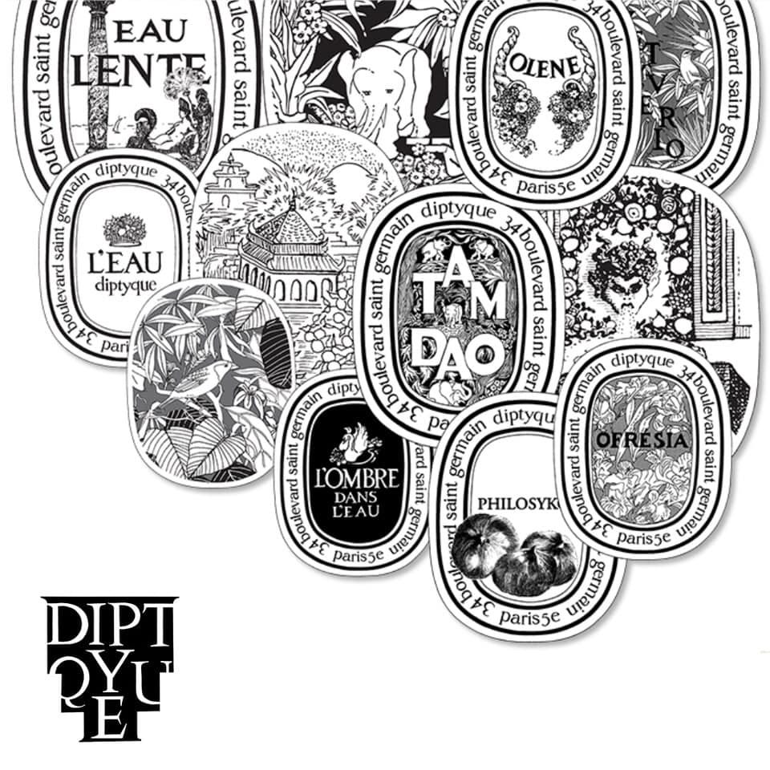
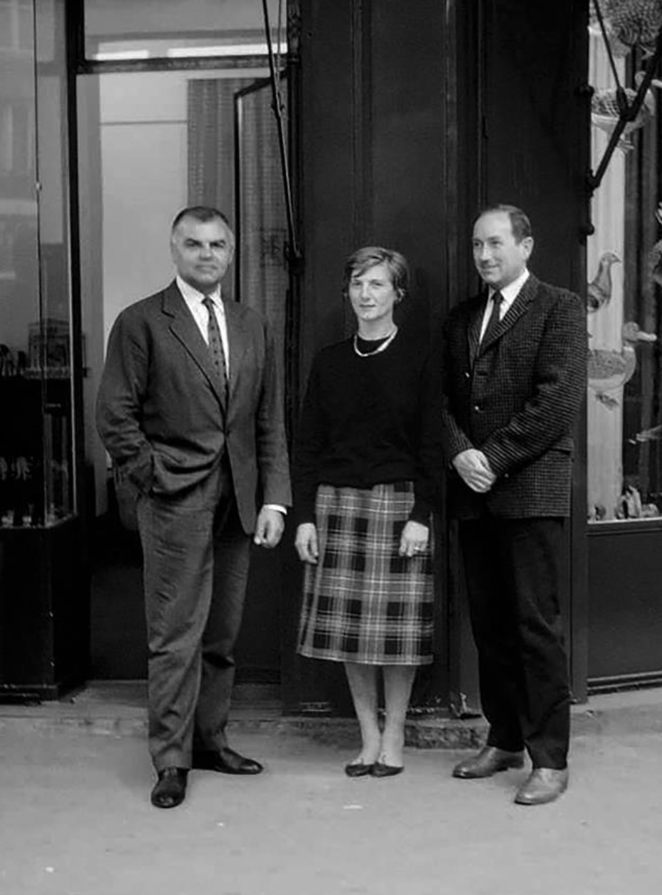
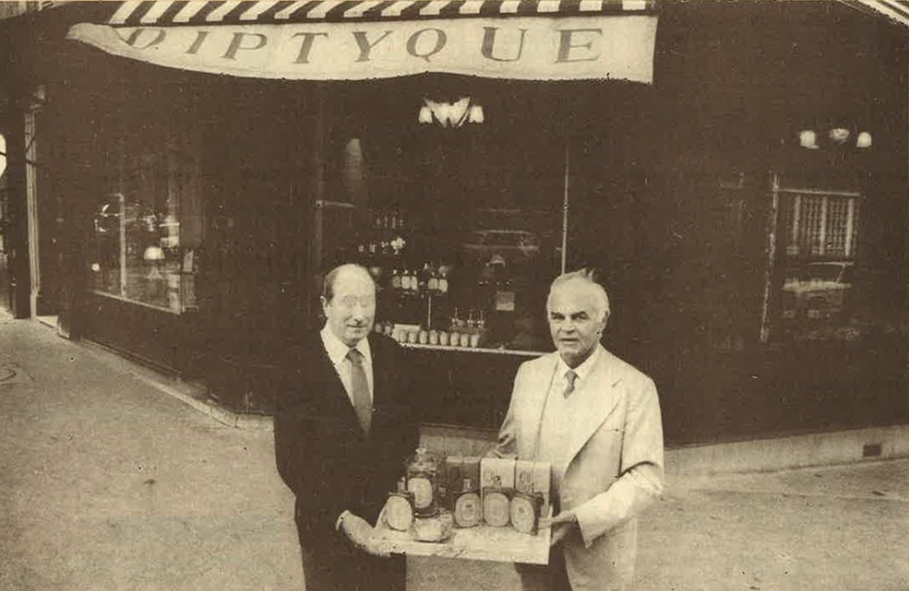
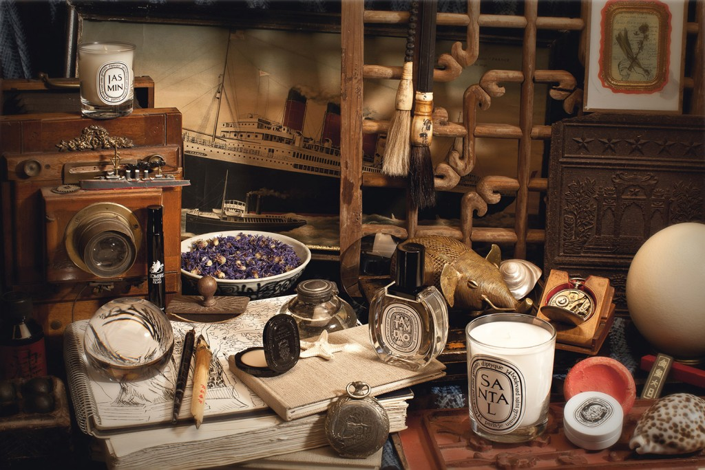
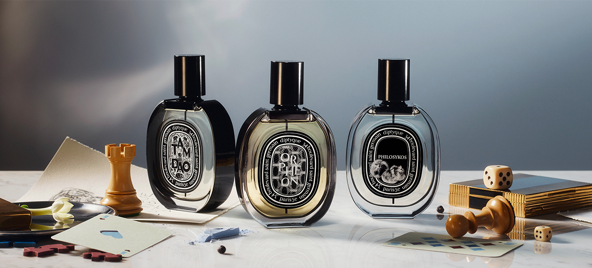
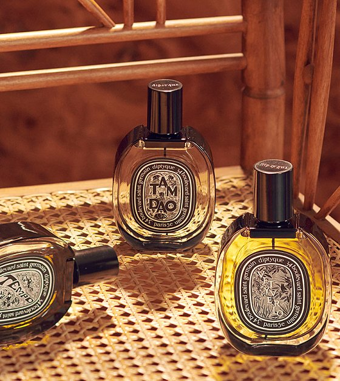

"당신의 후각에 특별한 풍경을 선사한다."
Diptyque는 프랑스어로 '2단 접이 화판' 을 뜻합니다.
조향사가 아닌, 무대 디자이너, 건축가, 화가가 직물 등을 판매하기 위한 부티크를 만들어서 향수로 사업을 확장한 케이스로, 일반적인 조향사들의 시각과 다른 조향 과정이나 원료 선택 과정을 거치고, 지금까지도 퍼퓨머&아티스트 브랜드를 표방하여 향수 외에도 다양한 제품들이 출시됩니다.
Diptyque는 인공적인 느낌을 배제하고, 인상적인 영감을 바탕으로 특정한 자연물 혹은 주제에 대해 깊이있게 풀어낸 향으로 향수를 제조하기에 일반적으로 선호하는 향수의 이미지인 '예쁜 향' 과는 거리가 있을 수 있으며,
파브리스 펠레그랑은 "딥디크를 향수 세계의 '트렌드세터'라기 보다 일종의 '혁신가'로 봐야 합니다."
Diptyque는 자유롭고 새로운 시도를 합니다. 핸드메이드로 만든 자기 케이스 안에 딥티크 특유의 감성을 유지하며,
새로움을 추구하고 혁신을 두려워하지 않는 딥디크의 철학이 담겨있습니다.

THE HISTORY
딥디크의 역사

Since 1961
Christiane Gautrot, Desmond Knox-Leet 및 Yves Coueslant가 Diptyque를 설립했습니다.
Christiane Gautrot, Desmond Knox-Leet 및 Yves Coueslant가 Diptyque를 설립했습니다.

1963
Diptyque 최초의 향수 양초인 Aubépine, Cannelle 및 Thé(산사나무, 계피 및 차) 출시했습니다.
Diptyque 최초의 향수 양초인 Aubépine, Cannelle 및 Thé(산사나무, 계피 및 차) 출시했습니다.

2012
타원형 모양의 향수병을 선보였습니다. 이 새로운 약제상 스타일 용기는 로마 경비병의 방패에서 영감을 받은 제품 라벨의 모양을 구현하도록 디자인되었습니다.
타원형 모양의 향수병을 선보였습니다. 이 새로운 약제상 스타일 용기는 로마 경비병의 방패에서 영감을 받은 제품 라벨의 모양을 구현하도록 디자인되었습니다.

2020
새로운 Eau Capitale eau de parfum과 Paris en Fleur 향초를 출시하여 파리에 경의를 표 했습니다 .
새로운 Eau Capitale eau de parfum과 Paris en Fleur 향초를 출시하여 파리에 경의를 표 했습니다 .
2023 08 COSMETICS

Premium Perfume
가득 찬 향기의 삽화로 행복했던 순간의 기억들을 함께하다.
Best Present
소중한 당신에게 향기를 선물합니다.